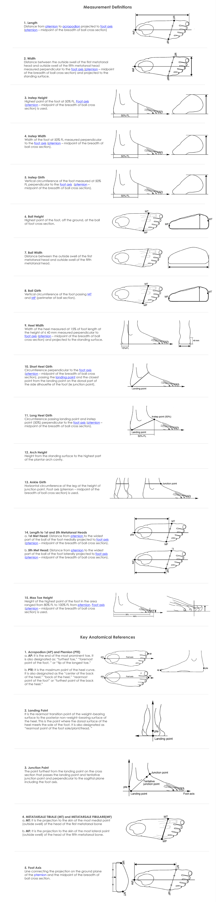

<h2 *ngIf="showHeader" mat-dialog-title>Measurement Definitions</h2>
<mat-dialog-content class="mat-typography" (scroll)="scrollHandler($event)" >
    <div>
        
    </div>
</mat-dialog-content>
<mat-dialog-actions align="end">
  <button mat-button mat-dialog-close>Close</button>
</mat-dialog-actions>
